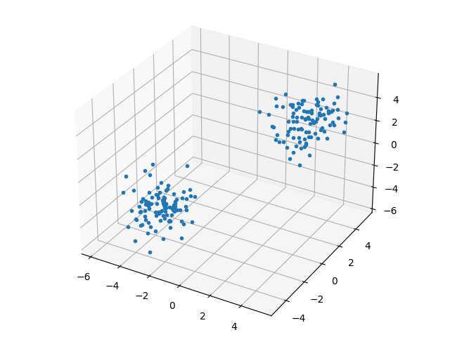
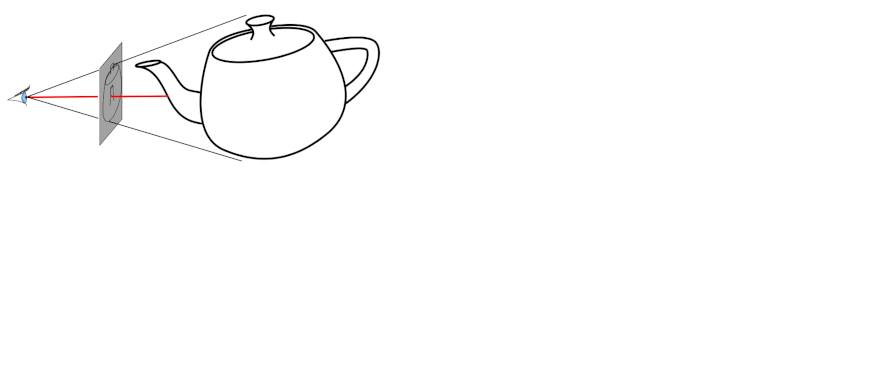
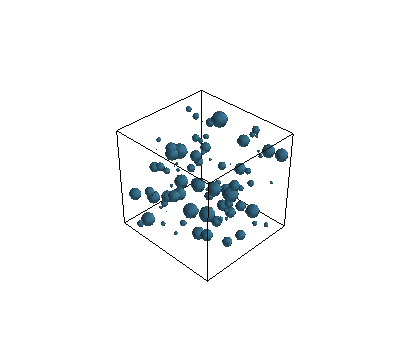
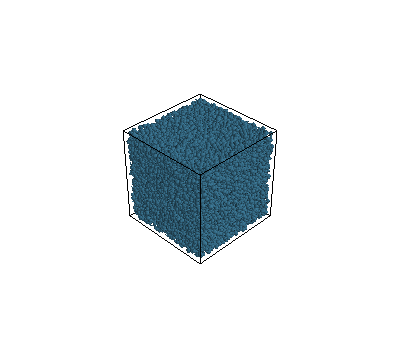
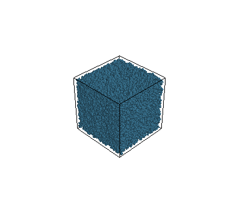
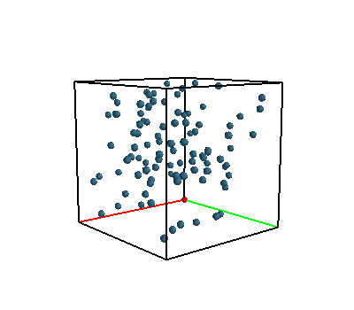
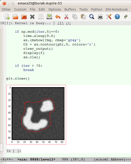

Animasyon, Matplotlib, Mayavi
Hareketli bilimsel grafikler (hareketli dalga, cisim) için şu an
tercih edilen yaklaşım bir dinamik sistem içinden "fotoğraf kareleri"
almak, mesela en basit ortamda Matplotlib ile plt.savefig('')
kullanarak, ve bu dosyaları ardından İmageMagick convert ile
birleştirip bir animasyonlu .gif yaratmak. Bu sayede genel
grafiklemede zaten kullandığımız, bildiğimiz plt.plot çağrılarını
kullanmış oluyoruz, ve alttaki yöntemlerle gerekli bazı fotoğraf
karelerini birleştirince bir anımasyon da elde etmiş
oluyoruz. Animasyon için farklı şekilde çağrılar yapmak, farklı
kütüphaneler kullanmak gerekmiyor.
Matplotlib
En basit 3 boyutlu parçacık grafiği,
N = 100
c1 = np.random.multivariate_normal(np.array([-3,-3,-3]), np.eye(3), size=N)
c2 = np.random.multivariate_normal(np.array([3,3,3]), np.eye(3), size=N)
c = np.vstack((c1,c2))
import matplotlib.pyplot as plt
from mpl_toolkits.mplot3d import Axes3D
fig=plt.figure()
ax=Axes3D(fig)
ax.plot(c[:, 0], c[:, 1], c[:, 2],'.')
plt.savefig('mayavi6.png')

Animasyon bağlamında sistem ileri doğru işletilirken bir indis i ile
hangi karede, hangi zaman diliminde olduğumuzu biliyorsak, bunu
kullanarak, belli dilimlerde (mesela her 5'inci dilim) çıktıyı alıp
diske yazabiliriz,
for i in ..
# hesaplar yap
if i%5 == 0:
plt.plot(...)
...
plt.savefig('out-%02d.png' % i)
plt.close('all')
Dikkat, eğer close çağrısı olmazsa fazla resim basma ve yoğun grafik
işlemleri ardindan hafıza tükenebilir.
Bu program işleyince elimizde out-01.png, out-02.png, gibi dosyalar
olacak. Bu dosyaları basit bir şekilde
convert -delay 20 -loop 0 out*.png out.gif
ile birleştirebiliriz. Üstte %02d kullanmış olmamız dosya
isimlerinde iki basamaklı sayı eklenmesini sağladı, 01, 02 gibi,
böylece basit yıldız kullanımı dosyaları sıralı bir şekilde
getirecektir.
Üç Boyutlu Grafikler İçin Mayavi
Simulasyon amaçlı pek çok parçacığı ekranda çizmemiz hareketlerini
takip etmemiz gerekebilir. Fakat çok hızlı olarak bilinen bir dilden,
mesela C++'dan bile, OpenGL çağırıp ekranda parçacıkları
glutSolidSphere ile çizdirmemiz hızlı bir cevap almamız için yeterli
olmayabilir. Belki arka planda, gözükmeyecek toplar vardır, bunları
göstermeye gerek var mı?
Bilgisayar grafikleme algoritmalarından (ki bilgisayar oyunlarında yaygın şekilde kullanılır) ışın takip etme (ray tracing) burada gerekli olabilir, görüntüye bakılma açısından sanal ışınlar hayal edip bunların sadece ilk çarpıktıklarını çizmek, arka plana kalanları çizmemek bir hızlandırıcı ilerleme olurdu.

O zaman teker teker top çiz demek yerine tüm topların kordinatlarını bir seferde verip özel bir kütüphanenin görünecek olan objelere karar vermesi daha mantıklı olabilir. MayaVi ve onun arka planda kullandığı VTK işte bu işi başarıyor.
Kurmak icin
pip install pyqt5 mayavi
En basit örnek üzerinde görelim,
from mayavi import mlab
mlab.options.offscreen = True
N = 100
c1 = np.random.multivariate_normal(np.array([-3,-3,-3]), np.eye(3), size=N)
c2 = np.random.multivariate_normal(np.array([3,3,3]), np.eye(3), size=N)
c = np.vstack((c1,c2))
fig = mlab.figure(fgcolor=(0., 0., 0.), bgcolor=(1, 1, 1), size=(640, 360))
r = np.ones(2*N)*0.2
color=(0.2, 0.4, 0.5)
mlab.points3d(c[:, 0], c[:, 1], c[:, 2], r, color=color,
colormap = 'gnuplot', scale_factor=1, figure=fig)
mlab.outline()
mlab.view(azimuth=00, elevation=80, focalpoint=[1, 1, 1], distance=30.0, figure=fig)
mlab.savefig(filename='mayavi7.png')
Farklı boyutlarda,
mlab.figure(fgcolor=(0., 0., 0.), bgcolor=(1, 1, 1))
N = 100
c = np.random.rand(N, 3)
r = np.random.rand(N) / 10.
mlab.points3d(c[:, 0], c[:, 1], c[:, 2], r, color=(0.2, 0.4, 0.5))
mlab.outline()
mlab.savefig(filename='mayavi1.png')

Şimdi 80,000 tane topu, arka arkaya iki grafikte çizdirelim,
mlab.figure(fgcolor=(0., 0., 0.), bgcolor=(1, 1, 1))
N = 80000
c = np.random.rand(N, 3)
r = np.random.rand(N) / 10.
mlab.points3d(c[:, 0], c[:, 1], c[:, 2], r, color=(0.2, 0.4, 0.5))
mlab.outline()
mlab.savefig(filename='mayavi2.png')
mlab.figure(fgcolor=(0., 0., 0.), bgcolor=(1, 1, 1))
N = 80000
c = np.random.rand(N, 3)
r = np.random.rand(N) / 10.
mlab.points3d(c[:, 0], c[:, 1], c[:, 2], r, color=(0.2, 0.4, 0.5))
mlab.outline()
mlab.savefig(filename='mayavi3.png')
 
Bu iki grafikleme oldukca hızlı şekilde geri döndü. Eğer bir sıvı dinamiğini simüle ediyorsak ve milyonlarca parçacık varsa bu perfomans belki anlık ekranda göstermek için yeterli olmayabilir, fakat arka planda birkaç dakika beklenerek tüm simülasyonun gidişatı belli birkaç kare yanyana koyularak kabul edilir bir zaman içinde yaratılabilir.
Kordinat Eksenleri
Eğer outline kullanmak yerine sabit büyüklükte, x,y,z kordinat
eksenlerini göstermek istersek, bunu teker teker kendimizin yapması
lazım. Altta orijinde duran her kenarı 2 birim büyüklükte bir küp
gösteriyoruz,
BS = 2.0
N = 100
c = np.random.rand(N, 3)*2.0
r = np.ones(N)*0.1
fig = mlab.figure(figure=None, fgcolor=(0., 0., 0.), bgcolor=(1, 1, 1), engine=None)
color=(0.2, 0.4, 0.5)
mlab.points3d(c[:, 0], c[:, 1], c[:, 2], r, color=color, colormap = 'gnuplot', scale_factor=1, figure=fig)
mlab.points3d(0, 0, 0, 0.1, color=(1,0,0), scale_factor=1.0, figure=fig)
mlab.plot3d([0.0,0.0],[0.0, 0.0],[0.0, BS], color=(0,0,0), tube_radius=None, figure=fig)
mlab.plot3d([0.0,BS],[0.0, 0.0],[0.0, 0.0], color=(1,0,0), tube_radius=None, figure=fig)
mlab.plot3d([0.0,0.0],[0.0, BS],[0.0, 0.0], color=(0,1,0), tube_radius=None, figure=fig)
mlab.plot3d([0.0,0.0],[0.0, BS],[BS, BS], color=(0,0,0), tube_radius=None, figure=fig)
mlab.plot3d([0.0,BS],[0.0,0.0],[BS,BS], color=(0,0,0), tube_radius=None, figure=fig)
mlab.plot3d([BS,BS],[0.0,BS],[BS,BS], color=(0,0,0), tube_radius=None, figure=fig)
mlab.plot3d([BS,0],[BS,BS],[BS,BS], color=(0,0,0), tube_radius=None, figure=fig)
mlab.plot3d([0,0],[BS,BS],[BS,0], color=(0,0,0), tube_radius=None, figure=fig)
mlab.plot3d([BS,BS],[0.0,0.0],[0.0,BS], color=(0,0,0), tube_radius=None, figure=fig)
mlab.plot3d([BS,BS],[0.0,BS],[0.0,0.0], color=(0,0,0), tube_radius=None, figure=fig)
mlab.plot3d([BS,0.0],[BS,BS],[0.0,0.0], color=(0,0,0), tube_radius=None, figure=fig)
mlab.plot3d([BS,BS],[BS,BS],[0.0,BS], color=(0,0,0), tube_radius=None, figure=fig)
mlab.view(azimuth=50, elevation=80, focalpoint=[1, 1, 1], distance=8.0, figure=fig)
mlab.savefig(filename='mayavi5.png')

Problemler
Eğer ardı ardına grafik basıyorsak, döngü dışında fig = mlab.figure
komutu kullanıp, her döngü sonunda mlab.savefig ardından
mlab.clf() uygulamak hafıza problemlerini çözecektir.
Daha once yazdigimiz kesit seviyeleri yazisini not defteri ortamina gecirdik, ve bu yazida kesit seviyeleri diferansiyel denklemi hesaplanirken, onun uzerinden yapilan imaj bolumu aninda not defteri icinde gosteriliyor. Not defteri icinde animasyon gostermek icin kullanilan kalip
Eski bazi yaklasimlar altta bulunabilir
Not Defteri Icinde Animasyon
from IPython.display import clear_output
f, ax = plt.subplots()
..
while True: # bir dongu
...
ax.imshow(...)
CS = ax.contour(...)
clear_output()
display(f)
ax.cla()
Biz ax.imshow, ax.contour kullandık, fakat ax üzerinde pek çok
grafiksel işlem yapılabilir tabii ki.
Not: iPython not defterinin indirilip yerel, ya da kod işletilmesine izin veren bir defter servisi üzerinde işletilmesi lazım.

Matplotlib, Pylab ve hareketli plot, animasyonlar
Bir kordinat sistemı üzerinde canlı olarak bir hesabın sonucunu seyretmek istersek, Pylab için faydalı bir örnek kod altta. Kod arka arkaya 10 tane x,y değeri üretiyor, sayılar 0..1 arası, ve eksenlerin sabit kalması için setxlim, setylim çağrılarını yapmak lazım.
from pylab import *
from random import *
from time import *
ion()
fig = plt.figure()
ax = fig.add_subplot(111)
for i in xrange(10):
sleep(0.5)
ax.plot([random()], [random()], 'd')
ax.set_xlim(0, 1)
ax.set_ylim(0, 1)
hold(False)
draw()
Kaynaklar
[1] https://docs.enthought.com/mayavi/mayavi/mlab.html
[2] https://www.toptal.com/data-science/3d-data-visualization-with-open-source-tools-an-example-using-vtk
Yukarı